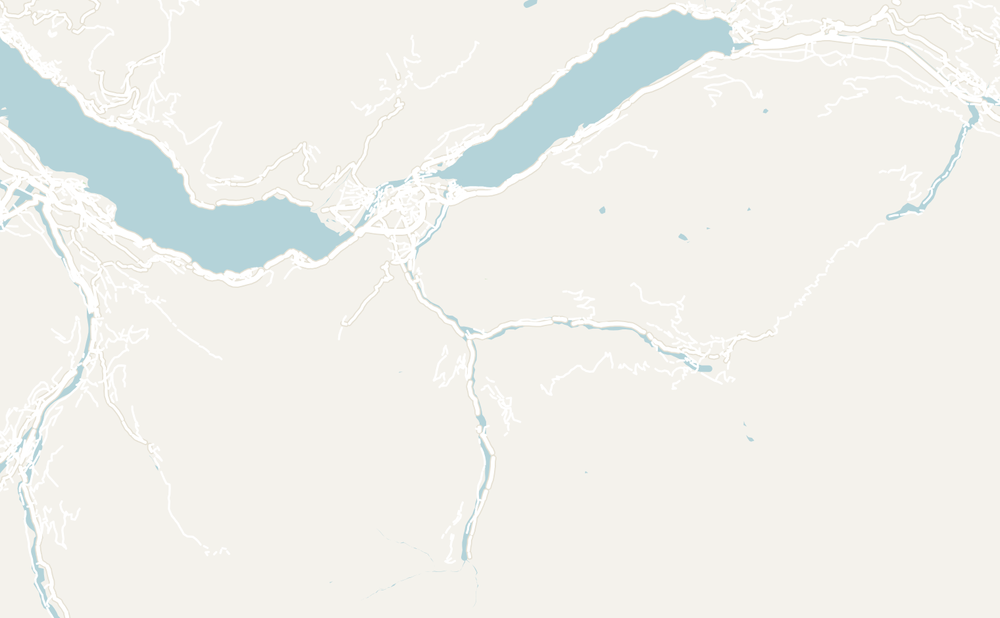
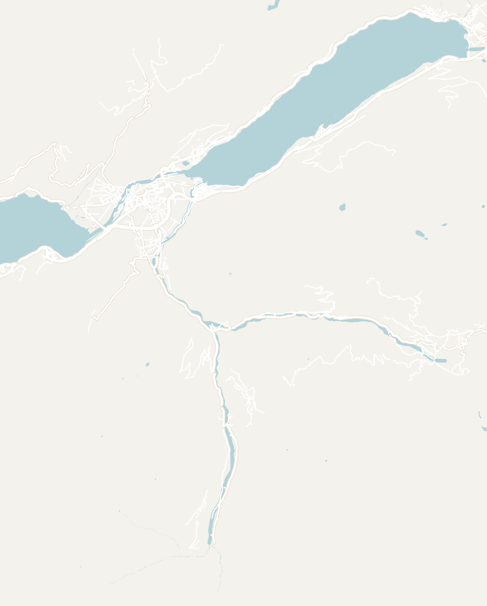
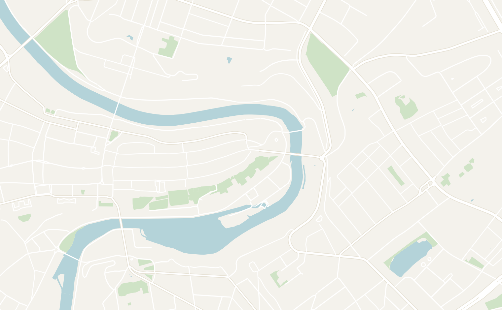
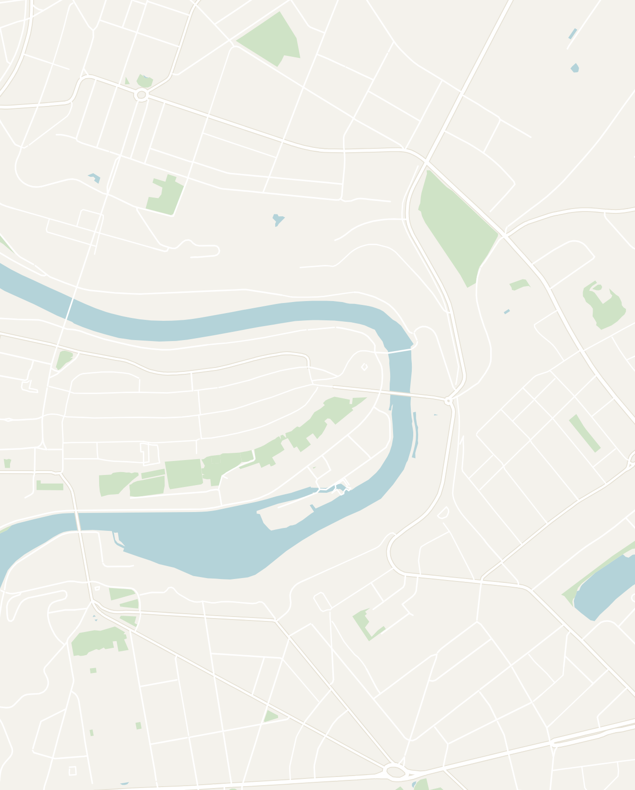
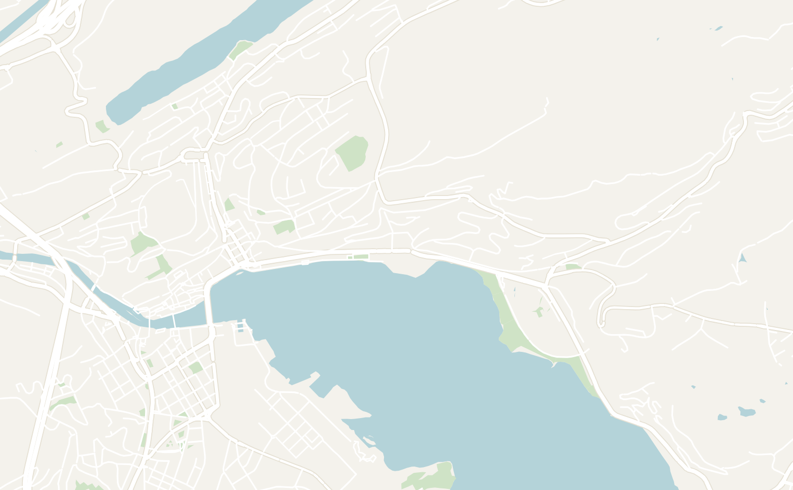
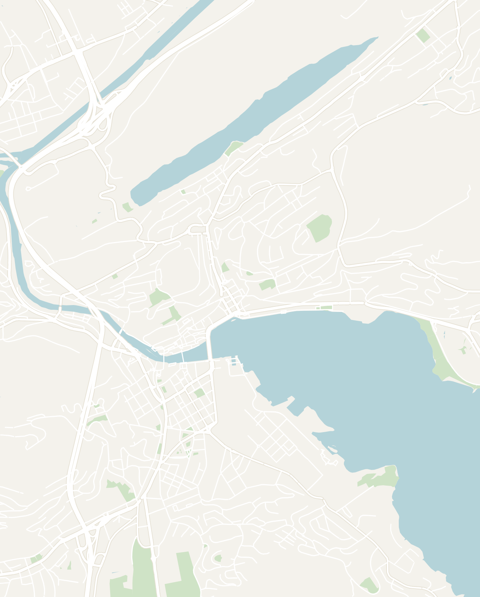

General
Switzerland is one of the most beautiful countries in the world that I've ever visited. It truly is the ultimate Alpine playground. In the summer, Switzerland has some of the best hiking with lush green valleys, turquoise lakes, roaring waterfalls and charming medieval towns accompanied by snow-capped peaks as the backdrop. In the winter, the country transforms into arguably the best place for winter sports in the world.
The catch is that it's also one of the most absurdly expensive places you'll ever travel to. If you can afford it, the scenery is worth every Franc. I'll provide tips on my experience in Switzerland during the summer. Most first-time trips center on the Bernese Highlands around Interlaken (the hiking and adventure hub) with the charming cities of Bern and Lucerne an easy train ride away.
- Getting around
- Flights — Switzerland is extremely well-connected internationally with the two main hubs being: Zurich Airport (ZRH) and Geneva Airport (GVA). Basel Mulhouse Freiburg Airport (BSL) is the cheapest way to get into the country since it serves budget airlines and is actually located in both France and Switzerland
- Trains — Switzerland has arguably the best rail network in the world: spotless, punctual to the minute, and reaching almost everywhere. Many of the scenic routes are attractions in themselves. If you're moving around a lot, look into a Swiss Travel Pass or Half Fare Card, since individual tickets are pricey. A 3 hour ride will cost on average between CHF 80 and CHF 135 ($90–$150 USD)
- There are also many easy options to come to Switzerland by train. I typically use an aggregator like TrainLine to plan routes and timing and then book through the train operator
- Cable cars, funiculars & mountain railways — for every famous hiking trail, there are plenty of cable cars for older tourists, disabled people or tired hikers who just want to take the cable car down. They are a convenient way to reach the peaks or car-free villages. However, they are also expensive ranging from CHF 20 to CHF 100+ ($22 to $110+ USD), depending on the popularity or length of the ride
- Money — Switzerland uses the Swiss Franc (CHF), not the Euro, and is one of the most expensive countries in the world. Even coming from overpriced San Francisco, I felt sticker shock here, especially with the restaurant prices
- If you're on a budget, I would recommend saving money by doing groceries for most meals and limiting restaurant meals. Even Swiss people dine out infrequently because it is so expensive!
-
Food — the Swiss food is basically German food with more famous chocolates and cheeses. Popular dishes include Fondue, Raclette, Bratwurst and Rösti
- Look out for the Bauernladen, the honor-system farm fridges on the sides of the road in rural towns. They are completely unlocked and operate on the honor system where you take whatever you want and deposit cash in a basket. The products are often farm fresh and the cheese and sausages are exceptional!
- Language — Switzerland has four national languages: German (Swiss German) in the center and east (Interlaken, Bern, Lucerne, Zurich), French in the west (Geneva, Lausanne), Italian in the south (Lugano) and Romansh in a few mountain valleys. Everyone in Switzerland is multilingual (including English!) and it is very straightforward to get around
- Safety — Switzerland is one of the safest countries in the world. The main hazards are nature (weather, altitude and steep trails) rather than crime
- How long to stay — 5 to 7 days is enough to explore Interlaken for the mountains and then add on a couple days for Bern and Lucerne each. For first-timers, I'd recommend 1 to 2 weeks in Switzerland (or however long your budget can stretch). Add more time if you want to reach Zermatt or beyond
Interlaken
3–4 days recommendedInterlaken is the adventure capital of Switzerland that sits right between the two bright blue, alpine lakes of Thun and Brienz with the Alps in the backdrop. The town is a great base for hiking, paragliding and exploring the jaw-dropping Lauterbrunnen valley. The scenery around this area is absolutely incredible and I wish I spent more time there.
I would recommend basing yourself there for at least 3 to 4 days to explore different hikes and day trips. Its central location makes a great base to take day trips to the Jungfrau Region (one of the most beautiful alpine regions in Switzerland) or Bern (the "unofficial" capital of Switzerland).
- Harder Kulm hike — meaning "harder climb" in German, this hike starts from the town of Interlaken and goes up to the main viewpoint above. It is only 5.1 miles or 8.2km roundtrip (Alltrails link here), but it is straight uphill and will take 5 hours to complete. The view at the top is extraordinary and at the summit there's a triangular viewing platform where you get one of the best views of both lakes (Thun and Brienz) and the entire valley below. You can reward yourself with a snack at the summit café
- The viewpoint is also accessible by funicular up if you'd rather skip the climb
- Hardergrat hike — one of the most famous and most dangerous hikes in Switzerland. A 15-mile (or 24 km) ridge run from Interlaken to Brienzer Rothorn with jaw-dropping views of the Eiger, Mönch and Jungfrau above Lake Brienz
- Most of the trail is on a narrow grassy ridge with steep drops on either side and cables are installed along the most exposed sections. The hike is not technical, but recommended for experienced hikers only as there are some dangerous sections. Budget a full 10–12 hours to complete it
- Extreme Sports — Interlaken (dubbed "the adventure capital of Europe") has pretty much every extreme sport you can think of ranging from paragliding over the lakes, skydiving from a helicopter at 13,000ft, canyoning, white water rafting, bungee jumping, canyon swing and jetboating on Lake Brienz. Most activities run April to October and sell out fast during summer
- Jungfraujoch — a peak known as the "Top of Europe" and home to the highest railway station on the continent. Located 1.5 - 2 hours from Interlaken, it can be reached by train. The Jungfraujoch is very touristy so expect the train to be very pricey (~130 CHF) and there to be a line at the top. My friends who went said it was unforgettable on a clear day
- Bike Around the Lakes — rent a bike in town to embark on a ride around one of Interlaken's two turquoise glacial lakes. E-Bikes are also available for rent in town if you want a little boost.
- Lake Brienz Bike Loop (~35km or about 3–4 hours) — the path starts right in town at the train station, Interlaken Ost. The turquoise glacial water is stunning, and the path passes through the charming village of Iseltwald and the Giessbach waterfall, which appears out of nowhere along the southern shore
- Lake Thun Bike Loop (~50km or about 4–5 hours) — a longer ~50km loop that rewards you with deep navy-blue water and panoramic views of the mountain peaks of Eiger, Mönch and Jungfrau
- A day trip to the Lauterbrunnen Valley — located only 20 minutes from Interlaken, take the train to Lauterbrunnen and walk the main road through the valley. This was one of the spectacular walks that I've been on with 72+ waterfalls cascading down from towering cliffs on both sides with the Alps in the background. Wing-suiters and parachuters constantly drop from the cliffs randomly throughout the day
- Make sure you stop by the Bauernladen farm fridges along the side of the road for a taste of farm-fresh cheeses, sausages and honey. There are no attendants and they operate completely on an honor system
- Grindelwald — a scenic village near Interlaken with views of the Eiger. Visit the street festival during the summer (every Wednesday from July to mid-August)
- Gimmelwald — a tiny car-free village above Lauterbrunnen that can only be reached by cable car. It is considered one of the most peaceful spots in Switzerland. My friend loved staying at the Mountain Hostel Gimmelwald which had stunning views of the mountains from the balcony
- Spatz — a cafe with a river-view from our table. The brunch was great with prosciutto, four types of cheese, bread and jam
- Balmer's Hostel — one of my favorite hostels in the world and hands down the best place to stay in Interlaken. Dating back to 1907, Balmer's Hostel was built inside a gorgeous traditional Swiss wooden chalet with a beautiful courtyard, beer garden and mountain views. The staff organizes daily activities (sunset swims, waterfall hikes, ski trips), outdoor games, chill rooms, a cosy bar, and even an underground nightclub. The place has a legendary reputation among backpackers and for good reason


Double-tap to open in Google Maps
Bern
1 day recommendedBern is Switzerland's charming medieval capital, built on a peninsula in a dramatic bend of the Aare River. In summer, locals actually float down the river to commute home from work after a long day. The old town is one of the best-preserved medieval city centers in Europe and filled with whimsical statues from fairytales. The city is compact making it easy to wander around and explore in a day
- Kramgasse — the main street of Bern dotted with shops and dozens of small fountains, each topped with a colorful statue of a medieval figure
- Zytglogge (Astronomical Clock) — a massive medieval clock tower embedded in an arch in the middle of the main street, originally built in the 13th century as a watchtower and city gate. On the hour, spinning statues of a joker with drums, dressed-up bears, a lion and a rooster come to life. The whole performance lasts about a minute. You can also take a guided tour inside the tower to see the original clockwork mechanism
- Einstein House — the modest apartment on Kramgasse where Albert Einstein lived from 1903 to 1905 while working as a patent clerk at the Bern Patent Office and developing his Special Theory of Relativity. The apartment has been restored to how it looked when he lived there. A quick, but interesting visit
- Bear Pit (Bärengraben) — Bern is named after bears and has kept them in the city since 1513, making this one of the oldest zoos in the world. Three bears currently live in a large cliff-side enclosure right next to the old town near the Nydegg Bridge. The river bends around the old town here making it one of the best spots to relax by the river
- If you visit during rush hour, you can watch locals floating down the Aare River to commute home. One of the more uniquely Bernese things you'll ever see
- Rosengarten — a terraced rose garden on the hill above the old town with a sweeping panoramic view looking down over Bern. An easy 15-minute walk up from the Bear Pit
- Berner Münster — Switzerland's tallest cathedral, a stunning Gothic sandstone building in the heart of the old town dating back to the 15th century. The entrance portal has an elaborate carving depicting the Last Judgement with over 200 figures. Climb the 344 steps to the top of the spire for one of the best views in the city. Free to enter the cathedral with a small fee to climb the tower


Double-tap to open in Google Maps
Lucerne
1–2 days recommendedLucerne is a postcard-perfect lakeside city where a medieval old town meets the water beneath mountain peaks. It's compact, walkable and one of the most photogenic cities in Switzerland. Spend 1–2 days here to explore the town at a relaxed pace
- Chapel Bridge (Kapellbrücke) — the oldest wooden bridge in the city, a covered walkway over the Reuss River lined with colorful flowers and connected to an octagonal water tower. The most photographed spot in Lucerne
- Spreuerbrücke — Lucerne's second covered wooden bridge, far less crowded than Chapel Bridge. The ceiling is lined with a unique medieval painting depicting death arriving for people of every class. Worth crossing slowly while looking up
- Museggmauer (City Walls) — medieval walls with several accessible towers overlooking the city. Walk the wall and climb the towers along the way. Look out for whimsical medieval paintings along the walls
- Zytturm — the most distinctive Musegg Wall tower. Houses the oldest clock in central Switzerland (1535) with a face large enough to be read by fishermen on the lake. There is also a large mural of two large red giants holding up the clock and Lucerne's coat of arms
- Lake Lucerne Boat Tour — a 1 hour sightseeing cruise on a yacht-style boat. The lake was the birthplace of the Swiss Confederation, and the audio guide covers the history of the four founding cantons. A relaxing way to end the day. The tour should run you ~$35
- Bourbaki Panorama Museum — a massive circular panorama painting of Swiss troops rescuing frozen French soldiers during the Franco-Prussian War, one of the first Red Cross operations. I'd never seen a Panorama painting before so it really surprised me! It genuinely looks 3D and the iPad audio guide is excellent
- Lion Monument — a wounded lion carved directly into a cliff face above a reflecting pool in a small forested park, honoring the Swiss Guards who died defending Louis XVI during the French Revolution
- Swiss Museum of Transport — 30 min walk from old town, this is the country's most visited museum covering every form of transport across 20,000 square meters with loads of interactive simulators, a planetarium, and the Lindt Chocolate Adventure. Budget at least half a day to explore the whole museum
- Rathaus Brauerei — microbrewery and restaurant right on the Reuss River with outdoor tables looking directly at Chapel Bridge. They brew their own beer on site. Get the veal bratwurst or the Brewer's Platter
- Restaurant Fritschi — historic Swiss restaurant in a quiet old town square serving traditional food since 1602. The building is covered in a gorgeous painted Carnival mural. Get the cheese fondue or the Rösti with bratwurst
- Backpackers Lucerne — a laid-back budget hostel a short 15-minute walk from the old town, but located right on the lake. It was not super social when I was there


Double-tap to open in Google Maps
Other Places to Consider
Switzerland is small, but packed with wonderful sites to visit. There's far more beyond the small region that I visited. Here are a few other places recommended by my friends:
- Zermatt & the Matterhorn — an alpine resort town at the foot of Switzerland's most iconic peak, the Matterhorn. A popular place during the winter for skiers and snowboarders
- Zurich — Switzerland's largest city, situated on the shores of a picturesque lake, with a lively old town, delicious food and nightlife scene
- Geneva — the French-speaking, international city in the west, home to the UN and near the terraced Lavaux vineyards
- Lugano — the Italian-speaking city in southern Switzerland. It is the meeting of cultures with more of a Mediterranean feel on a palm-lined lake